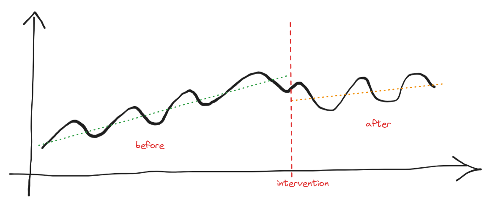
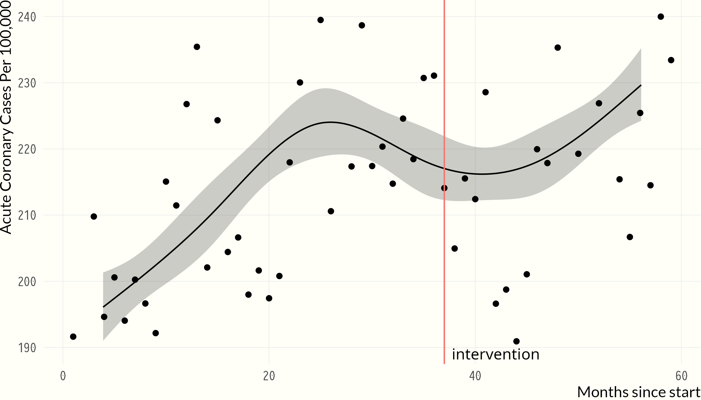
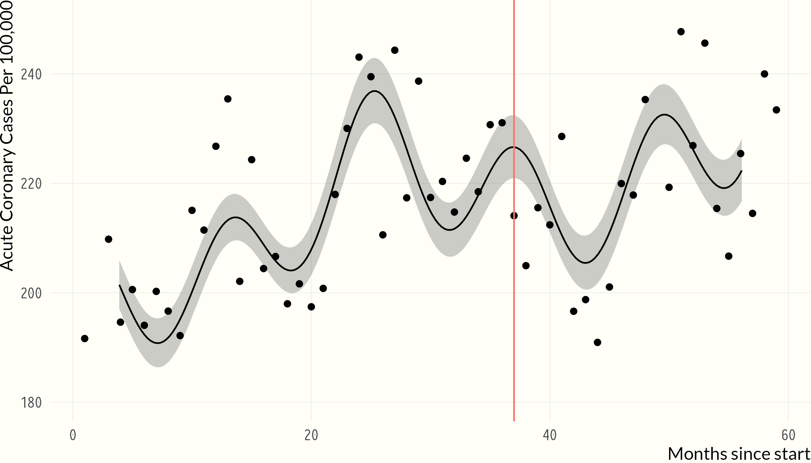
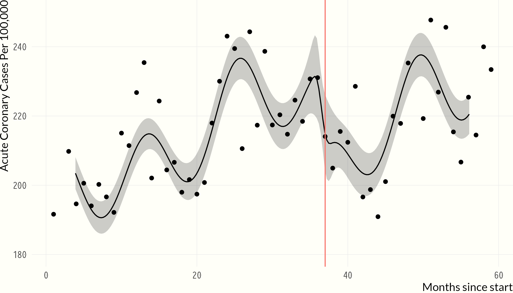
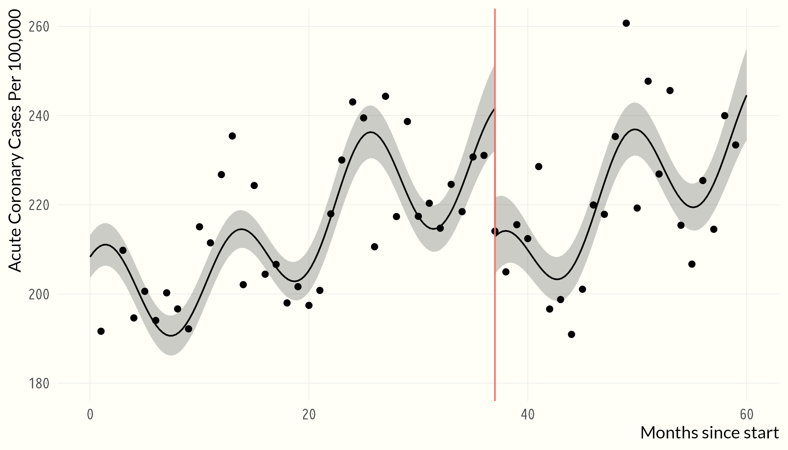

This is a practice notebook illustrating methods of analyzing whether an intervention is effective.
Background
We sometimes need to evaluate if an intervention is effective. For instance, in 2015, I was asked to assess whether a particular in-situ technology was associated with increased oil rate.
These analyses tend to be difficult not only because the data is noisy and some of the measurements are not accurate, but also because the presence of confounders that make the relationship unclear.
A confounder is an extraneous variable whose presence affects the variables being studied so that the results do not reflect the actual relationship between the variables under study.
These type of analyses go by the name of quasi-experimental or quasi-causal.
For instance, suppose we have a process that looks like this:

We apply an intervention at a point in time and want to assess whether the intervention is associated with a change in the response. Perhaps the process has some cyclicality and it’s trending up. How can we assess whether such association exist without being fooled by other existing patterns?
The aim of this notebook is to demonstrate a particular method of analysis based on interrupted time-series.
Data
Response: Acute Cardiac Events (aces) from Sicily, Italy
Intervention: smoking ban at all indoor locations in January 2005
Question: what is the effects of a smoking ban on aces?
Acute Cardiac Events (aces) over time. Color denotes months. Notice how ACES peak in the winter and drop in the summer.
Code
(sicily %>%ggplot() +geom_point(aes(x = date, y = aces, color = month), size =2, show.legend =FALSE) +geom_smooth(aes(x = date, y = aces), span =0.30, se =FALSE, color ="grey30", linetype ="dotdash", size =0.6) +labs(y ="Acute Cardiac Events (aces)",x ="",color ="" ) +theme(legend.position ="none")) %>%ggplotly()
Acute Cardiac Events (aces) over time with superimposed LOWESS smoother. Notice the cyclical trends becoming more apparent.
Capturing the cyclicality of the data
We need to first capture the cyclicality of the data (otherwise, we cannot untangle a natural up or down trend from the effect of the intervention). These cyclical trends are not only apparent from the graph, but coronary events are known to follow cyclic variation (see: Douglas et al.).
We start with a restricted cubic splines with 6 knots. Since we are dealing with counts, it is common to employ a Poisson regression, a special case of Generalized Linear Model (GLM). Harrell also adjusts for population size as an offset variable .
An offset is “a component of a linear predictor that is known in advance (typically from theory, or from a mechanistic model of the process). Because it is known, it requires no parameter to be estimated from the data. For linear models with normal errors an offset is redundant. For Generalized Linear Models (GLM), however, it is necessary to specify part of the variation in the response using an offset. (Ghilagaber, 2008). An offset is used for a covariate with known slope. This might arise in situations where you are correcting the number of events for an estimate of population size (Thomas).
The AIC of this tentative model is:
Code
dd <-datadist(sicily)options(datadist ="dd")g <-function(x) exp(x) *100000off <-list(stdpop =mean(sicily$stdpop))f0 <-Glm(aces ~offset(log(stdpop)) +rcs(time, 6), data = sicily, family = poisson)f0$aic
[1] 721.5237
Code
ggplot(Predict(f0, fun = g, offset = off)) +geom_point(aes(x = time, y = rate), data = sicily) +geom_vline(aes(xintercept =37, col ="red")) +annotate("text", x =42, y =189, label ="intervention") +labs(y ="Acute Coronary Cases Per 100,000",x ="Months since start" ) +theme(legend.position ="none")

Acute Cardiac Events (aces) over time with a 6-knots restricted cubic spline on time from a Poisson model adjusted for population size.
This is a good start. Now we need to add seasonality to the model. This can be done by adding a sine/cosine terms.
{{< fa square-arrow-up-right >}} Accounting for cyclical trends in models If we knew the origin, then we could just use one Sin term. In this case, it appears the lowest incidence occurs in the summer (August). However, in this example we will estimate the origin with both a sine and cosine term.
We can safely assume the period to be 12 months. Let’ save and print the 6 knots locations:
Code
## Save knots locationsk <-attr(rcs(sicily$time, 6), "parms")k
[1] 5.00 14.34 24.78 35.22 45.66 55.00
Now let’s add the sin/cos function to time and re-fir the model:
kn <- kh <-function(x) cbind(rcspline.eval(x, kn), sin =sin(2* pi * x /12), cos =cos(2* pi * x /12))f1 <-Glm(aces ~offset(log(stdpop)) +gTrans(time, h), data = sicily, family = poisson)f1$aic
[1] 674.112
Code
ggplot(Predict(f1, fun = g, offset = off)) +geom_point(aes(x = time, y = rate), data = sicily) +geom_vline(aes(xintercept =37, col ="red")) +labs(y ="Acute Coronary Cases Per 100,000",x ="Months since start" ) +theme(legend.position ="none")

Acute Cardiac Events (aces) over time with a sin/cos function of time from a Poisson model adjusted for population size.
This looks much better already, and the AIC confirms it (674 vs. 722 - lower is better).
Intervention
Conventional interrupted time series assumes a discontinuity at the intervention point. Since the intervention occurs at month 37 (i.e. January 2005), we start by adding 3 knots at 36, 37 and 38 months. Notice that the sin/cos function has been updated with the additional knots for a toal of 9 knots.
kn <-sort(c(k, c(36, 37, 38)))f2 <-Glm(aces ~offset(log(stdpop)) +gTrans(time, h), data = sicily, family = poisson)f2$aic
[1] 661.7904
Code
ggplot(Predict(f2, fun = g, offset = off)) +geom_point(aes(x = time, y = rate), data = sicily) +geom_vline(aes(xintercept =37, col ="red")) +labs(y ="Acute Coronary Cases Per 100,000",x ="Months since start" ) +theme(legend.position ="none")

Acute Cardiac Events (aces) over time with a sin/cos function of time and additional knots around the interventionto allow for a sudden change from a Poisson model adjusted for population size.
Nine knots is a lot given the sample size of 59. We now simplify the number of knots (6 instead of 9) and add a sudden discontinuity at 37 months:
h <-function(x) {cbind(rcspline.eval(x, k),sin =sin(2* pi * x /12), cos =cos(2* pi * x /12),jump = x >=37 )}f3 <-Glm(aces ~offset(log(stdpop)) +gTrans(time, h), data = sicily, family = poisson)f3$aic
[1] 659.6044
Code
times <-sort(c(seq(0, 60, length =200), 36.999, 37, 37.001))ggplot(Predict(f3, time = times, fun = g, offset = off)) +geom_point(aes(x = time, y = rate), data = sicily) +geom_vline(aes(xintercept =37, col ="red")) +labs(y ="Acute Coronary Cases Per 100,000",x ="Months since start" ) +theme(legend.position ="none")

Acute Cardiac Events (aces) over time with a sin/cos function of time and a discontinuity at the intervention from a Poisson model adjusted for population size.
Assessing the Effect
We now focus on quantifying the evidence on the effect of the intervention.
Code
options(prType ="html")f3
General Linear Model
Glm(formula = aces ~ offset(log(stdpop)) + gTrans(time, h), family = poisson,
data = sicily)
Model Likelihood
Ratio Test
Obs 59
LR χ2 169.64
Residual d.f. 51
d.f. 7
g 0.080
Pr(>χ2) <0.0001
β
S.E.
Wald Z
Pr(>|Z|)
Intercept
-6.2118
0.0095
-656.01
<0.0001
time
0.0635
0.0113
5.63
<0.0001
time'
-0.1912
0.0433
-4.41
<0.0001
time''
0.2653
0.0760
3.49
0.0005
time'''
-0.2409
0.0925
-2.61
0.0092
sin
0.0343
0.0067
5.11
<0.0001
cos
0.0380
0.0065
5.86
<0.0001
jump
-0.1268
0.0313
-4.06
<0.0001
From the table of coefficients we see strong evidence in support of the intervention. In particular, the coefficient for the jump is \(-0.127\). Because Poisson regression models the log of the expected count, the coefficient reflects the difference in log-counts of acute cardiac event associated with the intervention. Since the difference is negative, it means that the intervention is protective (i.e. it appears to be working). We can make the coefficient more interpretable by exponentiating it and say that the intervention is associated with a \(\left [1-exp^{-0.127} \right ]*100 = 11.9\%\)reduction in acute cardiac event.
Conclusion
According to the model, the intervention is associated with a \(12\%\) reduction in acute cardiac event, and between \(6\%\) and \(17\%\), 95% of the times.
Improving the estimate
Calculations of robust standard errors to be used in the 95% confidence interval above.
Code
## Source: https://stats.oarc.ucla.edu/r/dae/poisson-regression/library(sandwich)f3.1<-glm(aces ~offset(log(stdpop)) +gTrans(time, h), data = sicily, family = poisson)cov.m1 <-vcovHC(f3.1, type ="HC0")std.err <-sqrt(diag(cov.m1))r.est <-cbind(Estimate =coef(f3.1), "Robust SE"= std.err, "Pr(>|z|)"=2*pnorm(abs(coef(f3.1) / std.err), lower.tail =FALSE), LL =coef(f3.1) -1.96* std.err, UL =coef(f3.1) +1.96* std.err)exp(r.est[8, -3])
Estimate Robust SE LL UL
0.8808974 1.0337250 0.8254514 0.9400677
Real World Example
Earlier, I alluded to the application of this method to the analysis of a technology intervention for in-situ well. Indeed, this post was written when I wanted re-analyze the data using this modified technique. Naturally, I cannot share neither the example nor the findings.